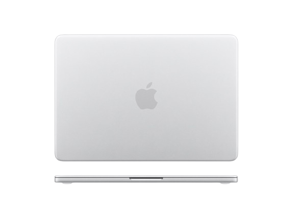
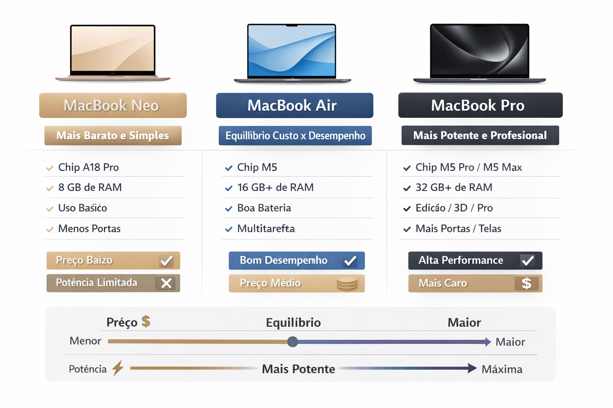

O MacBook Neo, lançado pela Apple em 2026, é o notebook mais barato da marca, pensado para estudantes e uso do dia a dia, trazendo uma tela de 13 polegadas Liquid Retina, chip A18 Pro (semelhante ao de iPhones, mas menos potente que os chips da linha M), cerca de 8 GB de RAM e 256 GB ou 512 GB de armazenamento SSD, além de bateria que pode durar até 15–16 horas, design em alumínio com materiais reciclados e opções de cores modernas; ele roda o sistema mac OS, possui recursos como câmera Full HD, alto-falantes estéreo e USB-C, e tem como principais pontos positivos o preço mais acessível, boa bateria e desempenho suficiente para tarefas como estudar, navegar e usar programas básicos, enquanto seus pontos negativos incluem menor potência para atividades pesadas (como edição de vídeo profissional e jogos), RAM limitada e menos recursos que modelos mais caros, sendo assim uma boa escolha para quem quer entrar no ecossistema Apple sem gastar tanto, mas não é ideal para uso avançado.

Conheça eles!
